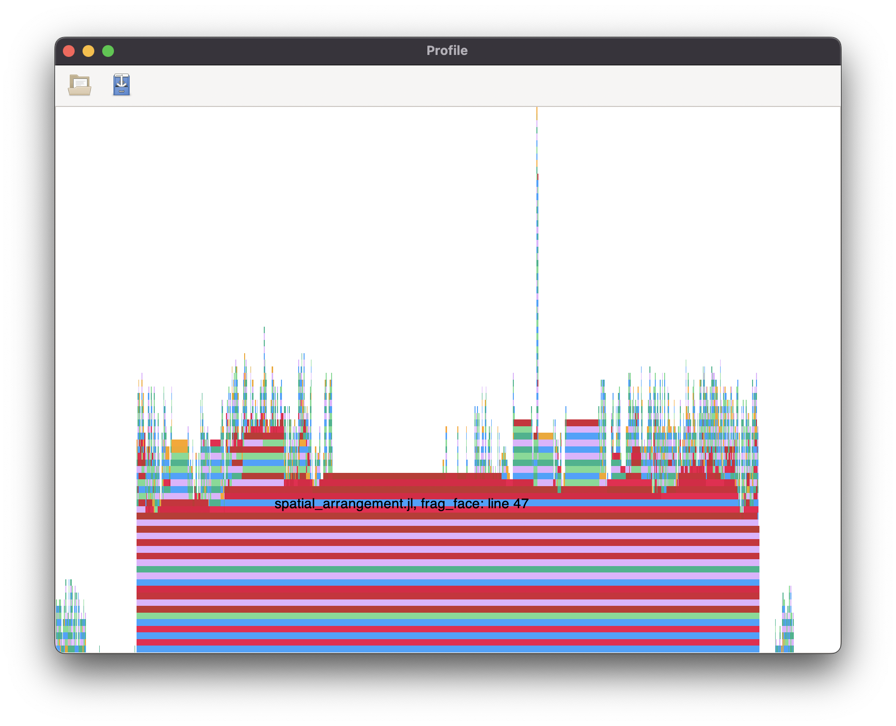

Prestazioni
Con l'aiuto della libreria Profile è possibile visualizzare a schermo un riferimento grafico relativo ai tempi di esecuzione.
L'asse orizzontale, nel grafico prodotto, rappresenta la quantità di tempo (più precisamente, il numero di backtraces) speso su ogni riga, è quindi sensato focalizzare l'attenzione sulle righe relative alle barre più lunghe.
Di seguito il grafico prodotto da Profile per il metodo spatial_arrangement.
Si vede come la riga più in basso, quindi anche quella in cui il processo rimane fermo più tempo è relativa a spatial_arrangement_1.
Applichiamo quindi Profile a spatial_arrangement_1 ottenendo il seguente grafico.

Il metodo
spatial_arrangement_1presenta già una parallelizzazione che sfrutta un numero di Threads superiore ad 1.
La funzione su cui focalizzarsi risulta essere quindi frag_face.
Nel notebook fragfaceparallelized.ipynb ci occuppiamo quindi di migliorare le prestazioni di questo metodo con un risultato di riduzione spaziale e temporale di quasi il 20%, come mostrato dai seguenti benchmarks.
V, EV, FE = get_input()
@benchmark Lar.Arrangement.frag_face(Lar.Points(V),EV,FE,[2,3,4,5],2)V, EV, FE = get_input()
@benchmark frag_face_async(Lar.Points(V),EV,FE,[2,3,4,5],2)
La parallelizzazione prosegue nel notebook mergeverticesparallelized.ipynb con i miglioramenti evidenziati dai successivi benchmarks.
V, EV, FE = get_input()
@benchmark Lar.Arrangement.merge_vertices($Lar.Points(V),$Lar.ChainOp(EV),$Lar.ChainOp(FE),$1e-8)
V, EV, FE = get_input()
@benchmark merge_vertices_async(Lar.Points(V),Lar.ChainOp(EV),Lar.ChainOp(FE),1e-8)
Inserendo le funzioni parallelizzate nel metodo spatial_arrangement_1, i risultati diventano significativi, come mostrato dalle seguenti figure.
V, EV, FE = get_input()
@benchmark Lar.Arrangement.spatial_arrangement_1(Lar.Points(V),Lar.ChainOp(EV),Lar.ChainOp(FE),false)
V, EV, FE = get_input()
@benchmark spatial_arrangement_1_rev(Lar.Points(V),Lar.ChainOp(EV),Lar.ChainOp(FE)) Il tempo di esecuzione si riduce quindi del 75%, mentre la memoria allocata di quasi il 60%.
Infine testiamo l'intero processo spatial_arrangement ottenendo i seguenti miglioramenti.
@benchmark Lar.Arrangement.spatial_arrangement(W, cop_EV, cop_FE)@benchmark TGW.spatial_arrangement(W, cop_EV, cop_FE)L'esecuzione dell'algoritmo TGW3D risulta essere quindi ridotta di un fattore circa 4, sia per quanto riguarda la memoria che il tempo utilizzati.